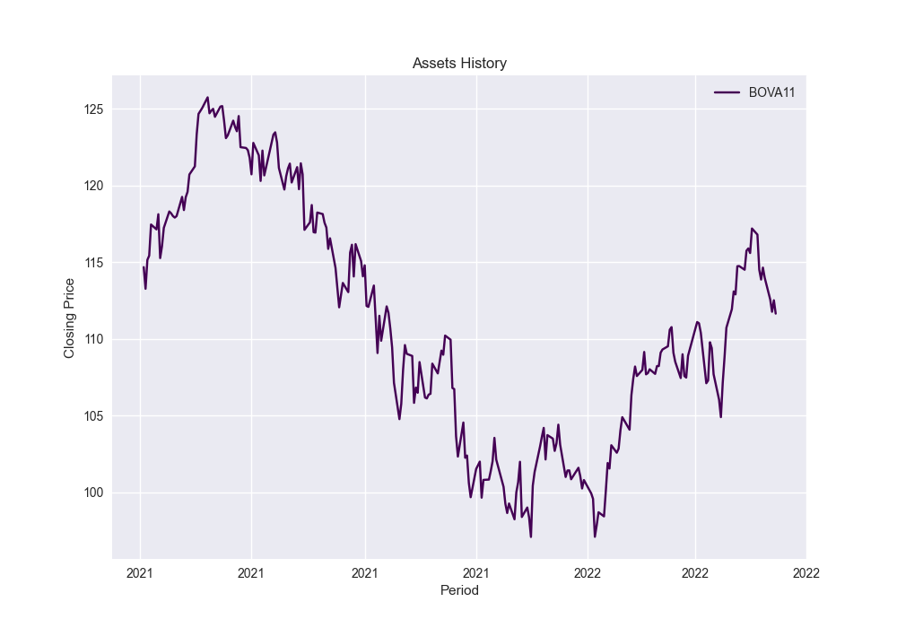

29 de março de 2022 Erika Timo de Oliveira - 18/0119567 Vitor Dolabela - 15/0151594
Foram utilizados 5 ativos do setor bancário para a análise solicitada:
Será considerado o período do ano de 2021
Para a coleta de dados foi utilizada a biblioteca yahooquery, conforme request modelada na função get_historical_prices, que salva os dados históricos do portifólio em uma datafrane e plota o gráfico abaixo na figura assets_history.png do diretório.
A base de dados foi exportada para o arquivo 0_data.csv.
Cálculo dos Retornos Contínuos Diários de cada ativo, a partir da fórmula abaixo: $$ ln \left (\frac{Pt}{P{t-1}} \right)$$ Esta fórmula é modelada na função return_variation, que salva os dados de retornos contínuos e discretos em uma dataframe, para cada ativo. Além disso, o gráfico abaixo é plotado na figura assets_return.png do diretório.
A partir da visualização acima é possível observar que os retornos obedecem uma distribuição normal para o período apresentado. O resultado é exportado no arquivo 0_a_results.csv.
Cálculo do Retorno Médio e Risco (desvio padrão) de cada ativo. Para isso, é realizada a média simples e o cálculo do desvio padrão sobre os vetores que contém os retornos diários dos ativos. O resultado é exportado no arquivo 0_b_results.csv.
@import "results/questao_0/0_b_results.csv"
Matriz de variância e covariância do retorno dos ativos no periodo. Os cálculos das matrizes de correlação e de covariância estão modelados nas funções return_covariation e return_correlation.
A equação abaixo é utilizada para o cálculo da covariância entre os retornos de dois ativos.
$$ ρ{ij} = \frac{1}{T} \sum{t=1}^{T} (R_{i,t}-\=Ri)(R{j,t}-\=R_j)$$
Os plots abaixo ilustram o resultado e estão salvos no diretório como assets_covariation.png e assets_correlation.png.
Encontrar a melhor formação das frações de investimento do risco mínimo destes retornos. Para isto, a função random_weights é utilizada para gerar n pesos aleatórios para a cada um dos ativos pertencentes ao portfolio. Em paralelo, temos a função portfolio_performance, que recebe como argumento um vetor de pesos e retorna o risco e o retorno do portfolio. Vale lembrar que, de acordo com a teoria de Markowits, o retorno de uma carteira de investimentos é dado pela média ponderada do retorno de cada um dos ativos que a compõe.
$$ Rc = \sum{i=1}^{N} R_i X_i$$
O cálculo do risco da carteira como um todo, por sua vez, é dado pela fórmula abaixo.
$$ V(R) = \sum{i=1}^{N} \sum{j=1}^{N}X_i Xj ρ{ij} $$
A função random_portfolio utiliza as funções random_weights e portfolio_performance para calcular os resultados de risco, retorno e índice sharpie para n simulações. Os dados são ilustrados no gráfico abaixo gráfico, plotado na figura markowits.png do diretório.
Para o cálculo do índice Sharpie foi considerada uma taxa livre de risco diária de 0,005%
As melhores frações encontradas a partir desta metodologia são:
@import "results/questao_0/0_d_results.csv"
Os gráficos abaixo apresentam o cálculo dos retornos contínuos e valores históricos do índice IBOVESPA.

Os pesos encontrados na questão 0 para o maior índice Sharpie foram utilizados para simular os preços diários de fechamento de uma carteira ideal ponderada. Os gráficos abaixo apresentam o cálculo dos retornos contínuos e valores históricos da carteira simulada.
Essa carteira simulada com os pesos de Markowits foi exportada para o arquivo simulated_portfolio_history.csv, uma vez que será utilizada na questão 1 da lista 2.
Regressão de Y (Retorno da carteira) e de X (Retorno do IBOVESPA).
Encontrar o β da Regressão
@import "results/questao_1/1_c_results.csv"
O retorno do ativo livre de risco é representado pela taxa SELIC, de 9,5% ao ano.
A taxa diária equivalente é de
Inicialmente, foi projetado um fluxo de caixa em que tanto os preços praticados, quanto a quantidade produzida e os custos variáveis são gerados por meio de distribuição.
Em seguida, realizou-se o cálculo do VP e do VPL, ao longo de 20 anos, juntamente com os dados iniciais do problema.
Os resultados estão apresentados na AV2 - Q2 da planilha AV2 e AV3 - Vitor Dolabela e Érika Timo vf.
O cálculo da opção real foi realizado com base nos modelos de Black-Scholes e binomial, cujas fórmulas e cálculos estão indicados na aba AV2-Q3 da planilha AV2 e AV3 - Vitor Dolabela e Érika Timo vf.